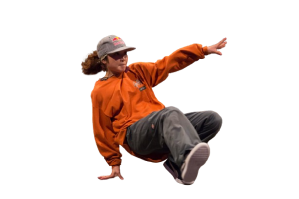
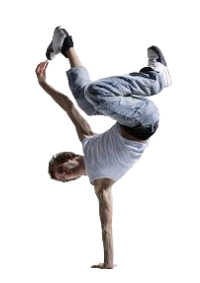
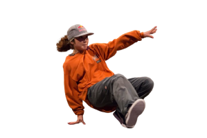
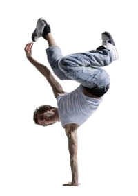

HISTORY OF HIP-HOP DANCE


HIPHOP ORIGIN
HISTORY OF HIP-HOP DANCE
Hip-hop 舞蹈起源於 1960 年代末至 1970 年代初的紐約市布朗克斯區，這是一個充滿挑戰的貧困社區。隨著 DJ Kool Herc 在派對上運用創新的音樂剪輯技術，年輕人們開始在音樂的節奏中即興創作動作，這些動作逐漸發展成為後來的 hip-hop 舞蹈。這種舞蹈風格以其強烈的節奏感和充滿能量的動作而著稱，成為全球文化的一部分。
OLD SCHOOL
NEW SCHOOL
OLD SCHOOL 街舞風格發源於 1970 年代，包括 breaking、locking 和 popping 等舞蹈形式。這些風格強調即興創作和舞者之間的互動，常常在派對和街頭表演中見到。
NEW SCHOOL 街舞風格則是在 1980 年代後期至 1990 年代逐漸形成，融入了更多的當代音樂和舞蹈元素，例如 hip-hop、house 和 krump。


 


